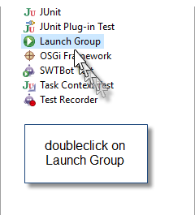
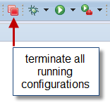
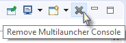
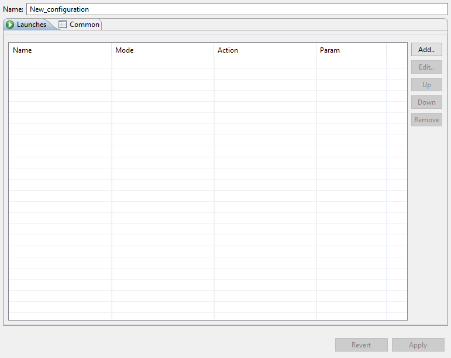
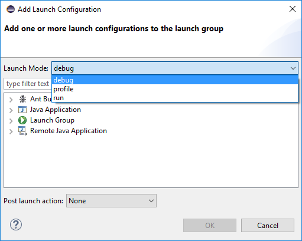
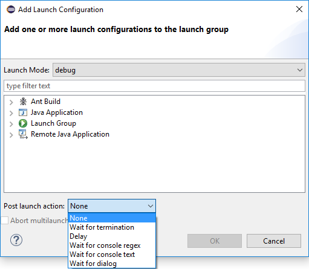
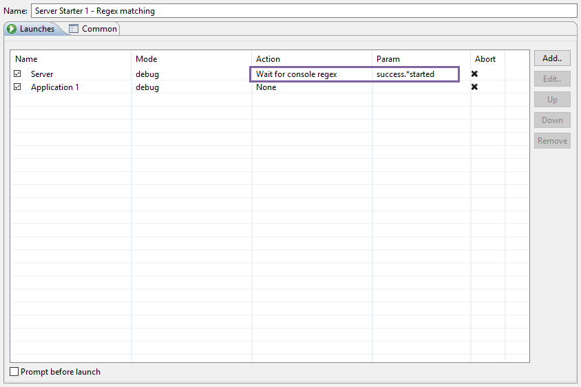

Latest Release: 1.5
Added waiting strategy: Wait for dialog
Added launch deactivation / activation
Separated waiting strategy: 'Wait for Console-String' into
Fix partial matching of regex for expressions: '^' and '$'
Added Multilauncher-Console
Multilauncher-Documentation
This plugin allows to run launch-configurations in a sequence automatically, while waiting for certain conditions to be met to start the next list-entry e.g. wait for termination.
GUI-Additions
'Launch Group' exists in the Run -and in the Debug Configurations... menu.
  
Features
Create a parentlaunch (multilaunch), which functions as a container for childlaunches and even other multilaunches. Add, Edit, Move and Remove your launches within your multilaunch.
You can create n multilaunches with the option to even nest and therefore combine them together.
Infinite-loops and wrong launch-references at any nesting-depth will be detected and consequently you won’t be able to run your multilaunch, until you’ve dealt with the shown error message.
Abort a multilaunch on childlaunch error. Not supported for the strategies 'Wait for dialog' and 'None'.
Every multilaunch logs the entire launch sequence into its own Multilauncher-Console. It is firtly created at the first multilaunch and can be cleared or removed at any moment. It will be automatically readded to the console view on the next multilaunch. New log messages are always appended at the end.
Launch Modes
Run - is a native Eclipse-Implementation, which starts the application normally.
Debug - is a native Eclipse-Implementation, which starts the application normally, but waits at breakpoints.
Profile - is a native Eclipse-Implementation to profile your applications. A common profiler for Eclipse is the 'JProfiler'.
Other modes e.g. 'coverage' or custom-made ones, are supported and will be shown as well if they exist in your current eclipse-workspace.

Waiting Strategies
None - Does not wait.
Delay - Waits for a specified number of seconds.
Wait for termination - Waits for termination of a launch.
Wait for dialog - Waits for dialog confirmation with configurable text or terminates multilaunch on cancellation.
Wait for text - Waits for line and partial text matching in the launch's console-output.
Wait for regex - Waits for line and partial regular expression matching in the launch's console-output.

Examples
This multilaunch starts 'Application 1' in run mode and will wait until it terminates, before 'Application 2' will be started in debug mode.

This multilaunch starts 'Server' in debug mode and will wait until the launch's console-output contains 'success[any_char_sequence]started', before 'Application 1' will be started in debug mode.
